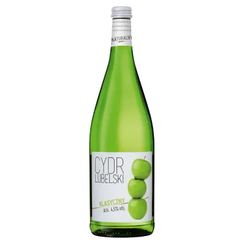

Jestes CYDREM

Fajny, nie za slodki, babelkowy, wakacyjny
Troche jest babski no i babelkuje w brzuchu
Fajna alternatywa dla ciezszego piwka, ale ogolnie no lekki napoj
Jestes otwartym na innych czlowiekiem, potrafisz sluchac
Ale moze sie zdazyc ze sam nie masz nic ciekawego do powiedzenia
Warto abys postaral sie znalezc cos co zostanie twoja pasja
Po prostu musisz byc troche oryginalniejszy ale tak to spox wszystko